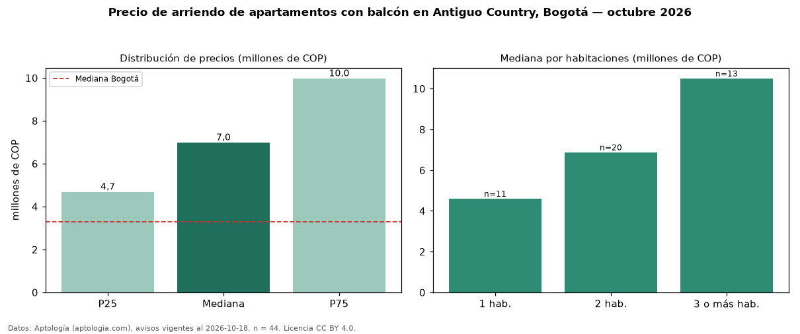

Precio de arriendo de apartamentos con balcón en Antiguo Country, Bogotá — octubre 2026
En Antiguo Country (localidad de Chapinero), Bogotá, la mediana de canon mensual de apartamentos con balcón es COP 6,99 millones, según 44 avisos vigentes. Eso es 40 % más que la mediana de todos los apartamentos en arriendo de Antiguo Country (COP 5,00 millones, n = 88); este segmento reúne el 50 % de esos avisos. Por metro cuadrado, la mediana es COP 73.529/m² al mes (n = 41), 14 % por encima del conjunto de referencia (COP 64.444/m²). El área mediana anunciada es 100 m². El segmento con más oferta es el de 2 habitaciones (20 avisos, mediana COP 6,88 millones); pasar de 1 habitación a 3 o más habitaciones cambia la mediana +128 %. La administración mediana declarada es COP 1,09 millones al mes (n = 28), aparte del canon. La mitad central de los avisos va de COP 4,69 millones a COP 9,97 millones (razón 2,1), una dispersión alta. El estrato más frecuente es 5 (73 % de los avisos con estrato). Datos: Aptología (aptologia.com), CC BY 4.0 — https://www.aptologia.com/arriendo/bogota/antiguo-country. Archivos: PDF, CSV con las cifras y gráfica PNG.

| Avisos únicos | 44 |
|---|---|
| Percentil 25 | COP 4.686.500 |
| Mediana | COP 6.990.000 |
| Percentil 75 | COP 9.975.000 |
| Mediana por m² | COP 73.529 |
Fuente: avisos vigentes de portales inmobiliarios recopilados por Aptología, deduplicados (mínimo 30 avisos únicos por celda). Precios pedidos, no cerrados. Fecha: 2026-10-18.